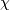
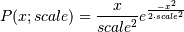

numpy.random.rayleigh¶
- numpy.random.rayleigh(scale=1.0, size=None)¶
Draw samples from a Rayleigh distribution.
The  and Weibull distributions are generalizations of the Rayleigh.
Parameters: scale : scalar
Scale, also equals the mode. Should be >= 0.
size : int or tuple of ints, optional
Output shape. If the given shape is, e.g., (m, n, k), then m * n * k samples are drawn. Default is None, in which case a single value is returned.
Notes
The probability density function for the Rayleigh distribution is

The Rayleigh distribution would arise, for example, if the East and North components of the wind velocity had identical zero-mean Gaussian distributions. Then the wind speed would have a Rayleigh distribution.
References
[R259] Brighton Webs Ltd., “Rayleigh Distribution,” http://www.brighton-webs.co.uk/distributions/rayleigh.asp [R260] Wikipedia, “Rayleigh distribution” http://en.wikipedia.org/wiki/Rayleigh_distribution Examples
Draw values from the distribution and plot the histogram
>>> values = hist(np.random.rayleigh(3, 100000), bins=200, normed=True)
Wave heights tend to follow a Rayleigh distribution. If the mean wave height is 1 meter, what fraction of waves are likely to be larger than 3 meters?
>>> meanvalue = 1 >>> modevalue = np.sqrt(2 / np.pi) * meanvalue >>> s = np.random.rayleigh(modevalue, 1000000)
The percentage of waves larger than 3 meters is:
>>> 100.*sum(s>3)/1000000. 0.087300000000000003